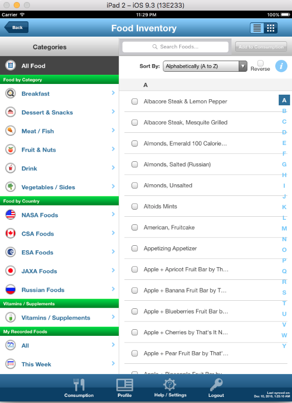
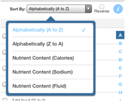
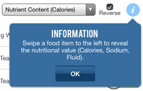
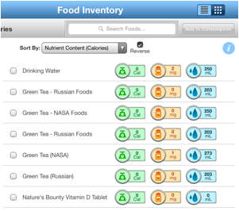

The Food Inventory page contains a list of all foods available in the application for you to select to add to your consumption. You may navigate to the Food Inventory page by clicking on the checkmark icon from the Summary page:
The Food Inventory page will be displayed:

On the left side of this page are the available filters to locate the food item you are looking for. Selecting one of these filters will narrow down the list of foods available on the right side of the screen.
You may also use the "Sort By" drop-down menu to select the criteria for how food items are displayed on the right side of the screen:

The "Reverse" checkbox is disabled when the food items are sorted alphabetically. It will be enabled once the food items will be sorted by "Nutrient Content" related options.
If the "Reverse" checkbox is checked, the food items will be sorted by "Nutrient Content" related options in ascending order. Otherwise, the food items will be sorted by "Nutrient Content” options in descending order.
Click on the "i" icon you’ll see a useful tip:

After swiping from left to right, the additional nutritional content will be displayed like:

On the top right of this screen you will also see buttons for displaying a text list of food items (the button with horizontal lines) or a list of food items with thumbnail images (the button with a 3x3 grid of boxes):
If you click on the button to view food items with thumbnail images, the following page will be displayed:
Touch any items right side of the screen to check them (a red check mark will appear next to any selected items).
Once you have selected the item(s) you wish to enter, click on the "Add to Consumption" button and the selected items will be added to your consumption list.